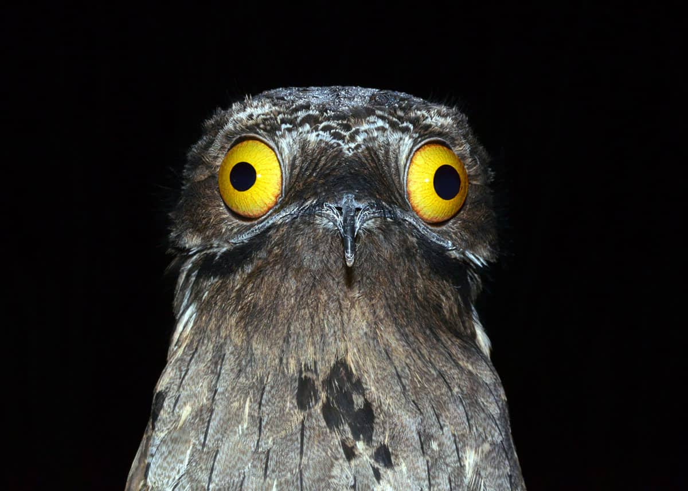

ＢＯＴＯＯ ＢＩＲＤ
認識ＢＯＴＯＯ（噗通鳥）
基本知識 介紹影片 鳥類圖片 所屬科目
林鴟科（學名：Nyctibiidae）也稱鉤嘴夜鷹科，是夜鳥類鉤嘴夜鷹目的唯一一科
善於偽裝，其羽毛顏色與樹幹相似，因此常在樹上採取抬頭直立的姿勢，偽裝成樹幹，捕食昆蟲和小鳥
其主要棲地在拉丁美洲，因為會發出類似「Po~too~」的特殊叫聲，在國外又被稱為「噗通鳥」(Potoo bird)。
噗通鳥相關講解影片

鉤嘴夜鷹屬
長尾林鴟
大林鴟
普通林鴟
安第斯林鴟
北林梟
白翅林鴟